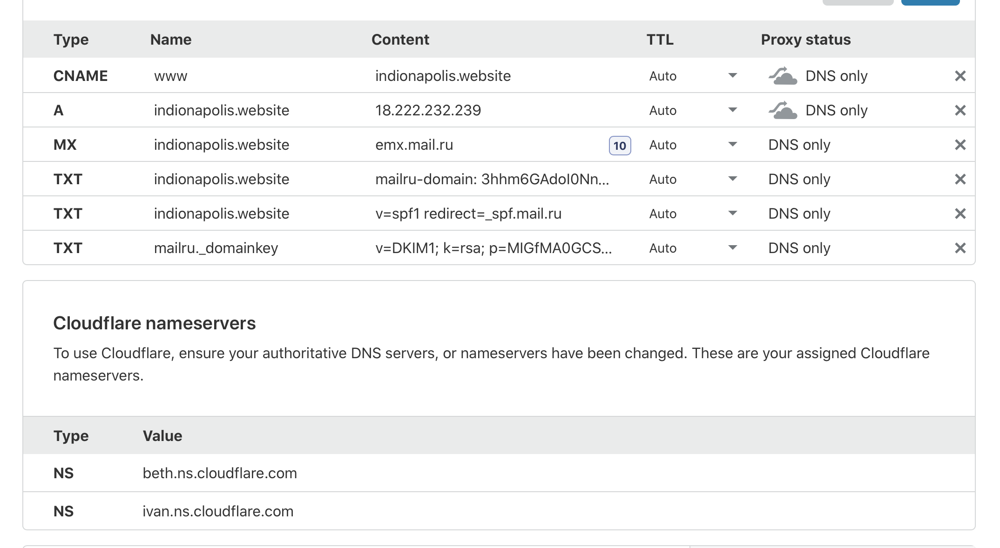

menu
hello world from main page!
nginx config
server {
server_name indionapolis.website;
return 301 http://www.indionapolis.website$request_uri;
listen 443 ssl; # managed by Certbot
ssl_certificate /etc/letsencrypt/live/indionapolis.website/fullchain.pem; # managed by Certbot
ssl_certificate_key /etc/letsencrypt/live/indionapolis.website/privkey.pem; # managed by Certbot
include /etc/letsencrypt/options-ssl-nginx.conf; # managed by Certbot
ssl_dhparam /etc/letsencrypt/ssl-dhparams.pem; # managed by Certbot
}
server {
server_name www.indionapolis.website;
location / {
root /home/ubuntu/DS/Lab7;
index index.html;
}
listen 443 ssl; # managed by Certbot
ssl_certificate /etc/letsencrypt/live/indionapolis.website/fullchain.pem; # managed by Certbot
ssl_certificate_key /etc/letsencrypt/live/indionapolis.website/privkey.pem; # managed by Certbot
include /etc/letsencrypt/options-ssl-nginx.conf; # managed by Certbot
ssl_dhparam /etc/letsencrypt/ssl-dhparams.pem; # managed by Certbot
}
server {
if ($host = indionapolis.website) {
return 301 https://$host$request_uri;
} # managed by Certbot
server_name indionapolis.website;
listen 80;
return 404; # managed by Certbot
}
server {
if ($host = www.indionapolis.website) {
return 301 https://$host$request_uri;
} # managed by Certbot
server_name www.indionapolis.website;
listen 80;
return 404; # managed by Certbot
}
screenshot from cloudflare
